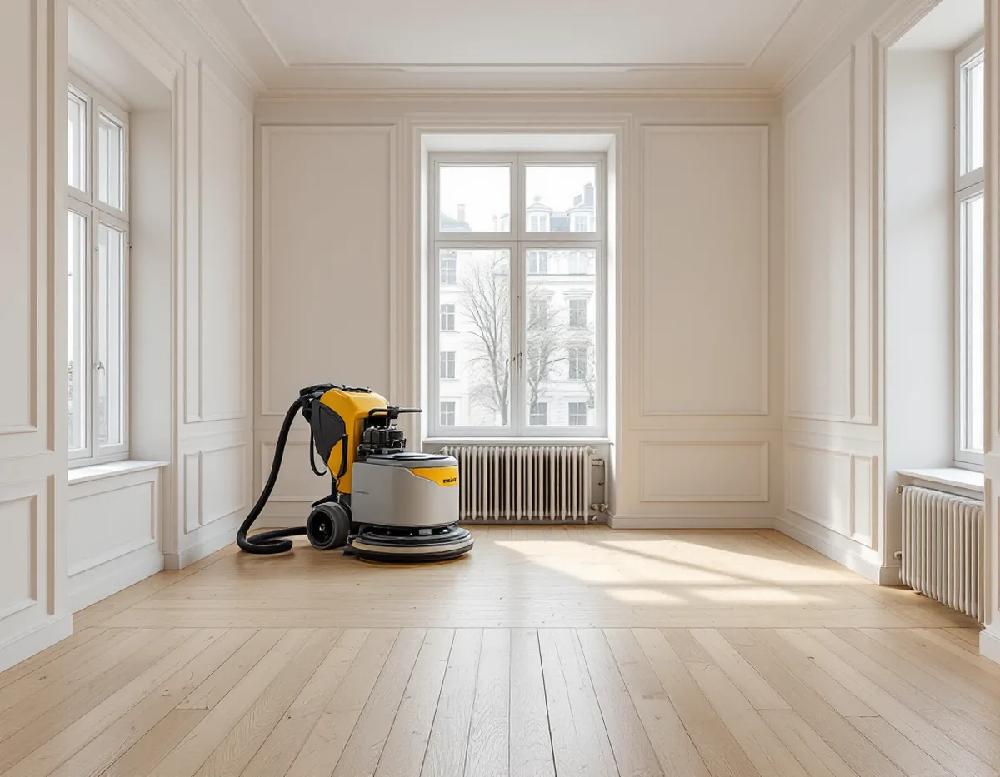
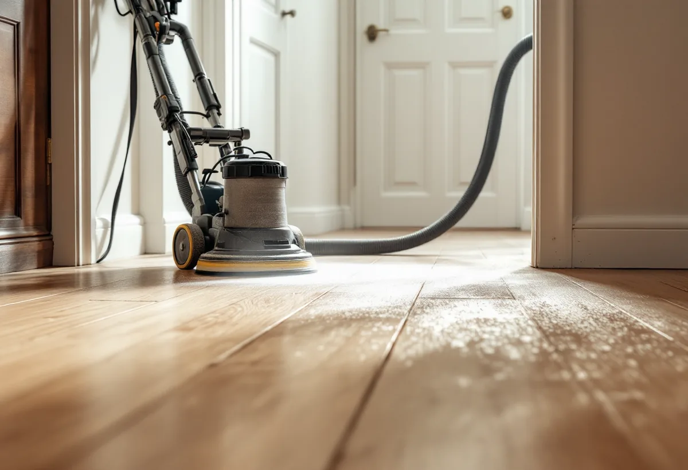

Platsbesök
Vi tittar på golvet, kontrollerar slitskiktet i en springa och frågar vad ordningsreglerna säger om bullrande arbeten.
Att slipa ett trägolv i en lägenhet är ett bullrigt och dammigt arbete som pågår i flera dagar, med grannar på andra sidan väggen och i våningen under. Geal Entreprenad AB slipar, lackar och oljar befintliga trägolv på Kungsholmen och planerar jobbet så att dammet hamnar i maskinen och föreningens regler följs.

Stadsdelen Kungsholm hade enligt stadens områdesfakta 12 650 bostäder 2025. Av dem var 9 571 bostadsrätter, och 12 268 låg i flerbostadshus. Den som vill slipa ett golv här gör det alltså i regel i en lägenhet, med föreningen som fastighetsägare och grannar som hör maskinerna.
Bostadsrättslagen 7 kap. 9 § säger att den som använder lägenheten ska se till att de som bor runt omkring inte utsätts för störningar som kan vara skadliga för hälsan eller försämra deras bostadsmiljö så att de inte skäligen bör tålas. Samma paragraf säger att man ska rätta sig efter föreningens särskilda regler. Står det i ordningsreglerna när bullrande arbeten får pågå, lägger vi slipdagarna efter det.
Ett golvjobb består av dagar med maskiner och dagar då lacken eller oljan torkar och rummet står tyst. Vi går igenom tidplanen med dig innan start, så att du kan berätta för grannarna vilka dagar det låter.

Golvbranschens riktlinjer för slipning av trägolv, SLIP 22, anger att slipdamm från bland annat ek och bok är cancerframkallande. Slipningen bör därför göras med en partikelseparator eller cyklondammsugare med HEPA-filter, och den som slipar ska använda andningsskydd i klass P3, hörselskydd och jordfelsbrytare.
För dig som bor kvar betyder det att dörrar till rum som inte ska slipas stängs och tätas och att det mesta av dammet samlas upp vid maskinen. Innan lacken stryks dammsuger vi golvet och även socklar och element, eftersom riktlinjerna för lackering, LACK 22, påpekar att damm där ska bort före lackeringen.
Grovslipningen görs med högt valstryck, mellanslipningen med medelvalstryck och finslipningen med lägsta möjliga tryck. Kanterna slipas med kantslip, och strukturen längs väggarna ska bli densamma som på resten av golvet.
En risk som få tänker på är brand. SLIP 22 varnar för att slipdamm som blandats med lack- eller oljerester utgör en brandfara. Dammpåsen ska tömmas efter slipningen och innehållet förvaras utomhus eller på en brandsäker plats, inte inomhus. I en lägenhet bär vi därför ut dammet innan vi lämnar för dagen.
Ska golvet oljas eller hårdvaxoljas gäller samma sak för trasor och rondeller. Riktlinjerna för underhåll, UNDERHÅLL 22, säger att trasor, papper, rondeller och slipdamm som varit i kontakt med oxiderande oljor ska läggas i vatten direkt efter användning och kan slängas efter 24 timmar. Behandlingen får inte göras nära öppen eld eller heta föremål.
Även spikar i golvet är en brandfråga. Enligt SLIP 22 ska de tas bort före slipningen, eftersom de kan förstöra slippappret och ge gnistor med risk för dammexplosion i dammpåsen. Därför går vi över golvet och letar efter spikhuvuden innan maskinen startas.
I en lägenhet går hela hushållet över samma hall varje dag. LACK 22 skiljer på lack för lätt slitage, som är tänkt för bostadens rum utom kök och hall, och lack för högt slitage, som är avsedd för bland annat kök och entré och stryks fyra gånger. Vill du ha samma yta i hela lägenheten väljer vi lack efter de rum som slits mest.
Torktiden styr när du kan använda rummen igen. Enligt riktlinjerna kan rummet normalt möbleras efter minst ett dygn, mattor och andra täta material bör vänta minst en vecka och starkt slitage minst två veckor. Hög luftfuktighet förlänger tiderna. Skyddstäckning bör undvikas, och måste något täckas ska materialet inte vara diffusionstätt.
Är golvet en lamellparkett gäller en särskild risk vid slipning, stavsläpp, som beskrivs på sidan om golvslipning i Sollentuna. Ska golvet i stället bytas finns mer under golvläggare på Kungsholmen och på sidan om golvläggning.
Vi tittar på golvet, kontrollerar slitskiktet i en springa och frågar vad ordningsreglerna säger om bullrande arbeten.
Slipning, lagning, ytbehandling och antal strykningar står som egna poster.
Rummen töms, spikar tas bort och dörrar till övriga rum stängs och tätas.
Grov-, mellan- och finslipning med dammavskiljare, och kantslip längs väggarna.
Lack eller olja stryks med torktid mellan lagren, och trasor läggs i vatten.
Vi går igenom golvet med dig och lämnar skötselråd för den yta du har valt.
Att slipa golv är ett rotarbete i en bostadsrätt enligt Skatteverket. Villkoret är att du har underhållsansvaret för golvet enligt föreningens stadgar och att arbetet görs i bostaden, innanför väggar, tak och golv. Byggstädning efter arbetet räknas också, men inte att forsla bort skräp eller möbler.
Avdraget är 30 procent av arbetskostnaden, högst 50 000 kr per person och år och högst 75 000 kr tillsammans med rutavdrag. Lack, olja och resor ger inget avdrag. Geal drar avdraget direkt på fakturan.
Golvytan, antalet rum, golvets skick och vilken ytbehandling du väljer betyder mest. Efter ett kostnadsfritt platsbesök får du ett skriftligt kostnadsförslag.
Parkett, trägolv, klinker och slipning.
Golvläggning i Stockholm →Stambyte, stämmobeslut och 30-talshus.
Badrumsrenovering på Kungsholmen →Slätputs på funkishus, lagad utan synliga skarvar.
Fasadrenovering på Kungsholmen →Fönstret i bostadsrätten, insida och beslag.
Fönsterrenovering på Kungsholmen →Stegljud, golvval och styrelsens tillstånd.
Golvläggare på Kungsholmen →Funkislägenheter, stadgar och ROT i bostadsrätten.
Målare på Kungsholmen →Ny tapet på putsade lägenhetsväggar.
Tapetsering på Kungsholmen →Hela lägenheten från golv till tak.
Totalrenovering på Kungsholmen →